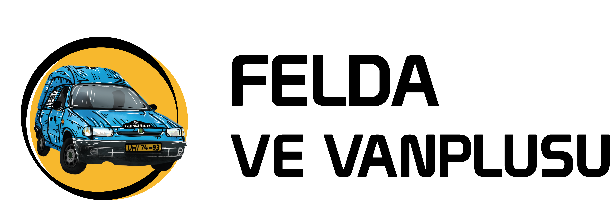

Náš Vanplus je ročník 1999 a má stále původní žluté značky.
Vanplusko jsme koupili v lednu roku 2023 a od té doby odvezlo spoustu věcí.
Několikrát bylo s náma kempovat po okolí
a tento rok zažilo svou nejintenzivnější cestu-GUMBALKAN letní edice.